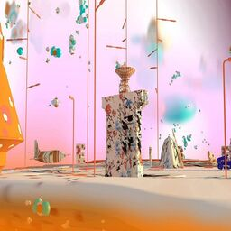

2D-3D scraping
//bing image scraper
// Download and install Python 3.10.0 here
//important, add python to Path in installation!
//Open up the command promp by typing ⊞+r and writing "cmd". In the command prompt and download the bing image scraper https://pypi.org/project/bing-image-downloader/
$ pip install bing-image-downloader
//make a folder and go there by typing "cd" and dragging that folder into the command prompt.
//adjust this python file with the correct searchterm and amount, and run it through the command line.
$ python bing_scraper.py
//now images should be downloading

//instagram scraper
//install the instagram scraper: https://github.com/arc298/instagram-scraper
$ pip install instagram-scraper==1.7.0
//here are some examples:
//takes all the posts from a specific user
$ python -m instagram_scraper.app pkulper -u username -p password
//takes 100 posts and their metadata from a user, and stores them in a given directory
$ python -m instagram_scraper.app pkulper -t image --media-metadata --maximum 100 -u scrapingwithkul -p scrapingwithkuleuven -d "C:\Users\joris\Downloads\bing scraper\dataset\instagram"
https://github.com/arc298/instagram-scraper

//imagemagick
Now that we have a dataset, we can use ImageMagick to alter it.
More information can be found here: https://imagemagick.org/index.php
//here are some examples:
//convert to png
$ magick *.jpg image.png
//convert to gif
$ magick convert *.jpg animation.gif
//resize
$ magick mogrify -resize 1080x1080! *.jpg
//label multiple images
$ magick convert *.jpg -annotate +20+30 "svalbard_dataset" a.jpg
$ magick convert *.jpg -annotate +20+30 "%f " a.jpg
//metadata labels
$ magick convert *.jpg -fill black -pointsize 50 -gravity center -annotate +0-0 "%f" %f.jpg
//filename montage
$ magick montage -label %f *.jpg montage.jpg
$ magick montage *.jpg -pointsize 10 -set label '%f\n%wx%h' -background White label_fname3.jpg
//print text as image
$ magick convert -gravity center pango:@pango_test.txt json_text.jpg
//apply blur
$ magick convert -blur 0x10 Image_1.jpg output.jpg
//create 10 colors from image
$ magick convert *.jpg +dither -colors 10 -unique-colors -filter box -resize 3000% colorcode.png
//batch ordered dithering
$ magick convert *.jpg -normalize -dither FloydSteinberg -colors 10 dithering.png
$ magick convert *.jpg -ordered-dither o2x2 test_2.png
$ magick convert *.jpg -ordered-dither o8x8 test_8.png
//treshold
$ magick convert *.jpg +dither -threshold 30.98% treshold.png
$ magick convert *.jpg -colorspace gray -contrast-stretch 50%,50% o.png //treshold 50%
//grayscale
$ magick convert *.jpg -colorspace Gray gray.jpg
//bordercolor
$ magick convert *.jpg -bordercolor black -border 1 border.jpg //add a 1px black border
$ magick convert *.jpg -matte -bordercolor none -border 10 border_none.png //add a transparancy border
//edge detection
$ magick convert *.jpg -canny 0x1+10%+30% edge_detection.jpg
//images with their 10-color counterparts
$ magick convert *.jpg +dither -colors 10 -unique-colors -filter box -resize 3000% -set filename:base "%[basename]" "%[filename:base]_edge.jpg"
$ magick mogrify -resize 256x256! *.jpg
$ magick montage -tile 2x1 *.jpg output.png
$ magick montage -label %f *.jpg montage.jpg
//combinations
//montage pairs for descriminiator vs generator machine learning
$ magick convert *.jpg -canny 0x1+10%+30% -set filename:base "%[basename]" "%[filename:base]_edge.jpg"
$ magick montage -tile 2x1 *.jpg output.png
//A collection of commands can also be written as a .bat file.
// download the example here
//Reality Capture
we can use this scraped dataset to generate a "moneyshot" 3d model
download the demo 2d files here
download the demo 3d files here
password: "softoroom"
Instructions:
1. Install the software from setup.exe.
2. Place files from crack dir to install dir and overwrite existed files.
3. Double click registration.reg and confirm writting data to registry.
workflow:
1. workflow>input images
2. alignment>align images
3. reconstruction>normal detail
4. reconstruction>texture
5. resonstruction>export>mesh
//scraping from google Maps/Earth
go to google chrome home directory. most of the times, this is found here: "C:\Program Files (x86)\Google\Chrome\Application".
create a shortcut of "chrome.exe" to your desktop
go to that shortcut and: right click>properties> and change the target directory to this -> C:\Windows\System32\cmd.exe /c "SET RENDERDOC_HOOK_EGL=0 && START "" ^"C:\Program Files (x86)\Google\Chrome\Application\chrome.exe^" --disable-gpu-sandbox --gpu-startup-dialog"
//blender 2.93
https://www.blender.org/download/
//blender addon
https://github.com/eliemichel/MapsModelsImporter/releases
//renderdoc 1.13
https://renderdoc.org/builds
//workflow
1) install the blender addon
2) click on the modified google chrome shortcut, remember the PID number
3) open renderdoc: file>inject into process
4) write down PID number and double click on the "chrome tab"
5) click "ok" on the PID number (from the chrome shortcut)
6) go the the desired location on maps/earth
7) set the "capture after delay" to 1 sec, press it and wiggle the google maps/earth
viewport around
8) double click on the file and "save capture as"
9) import file into blender